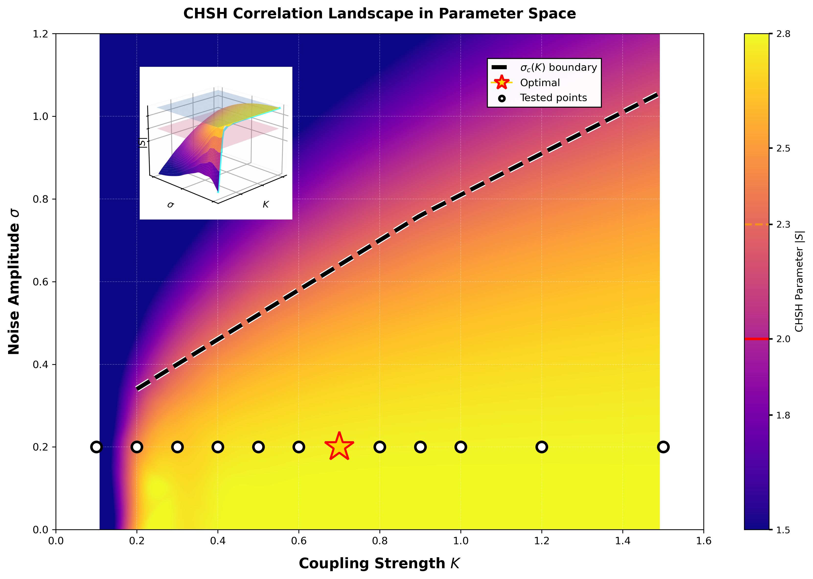
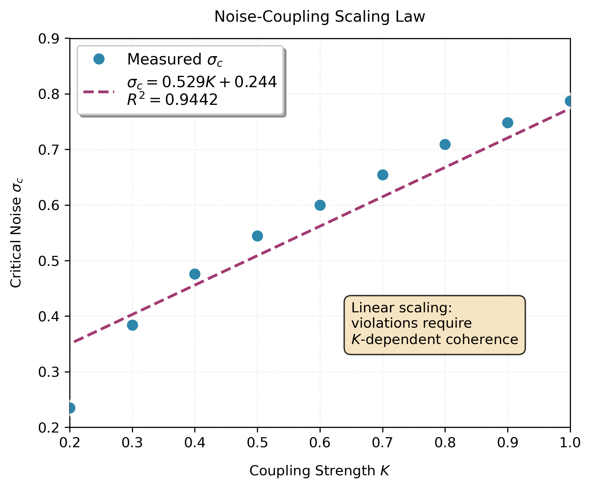
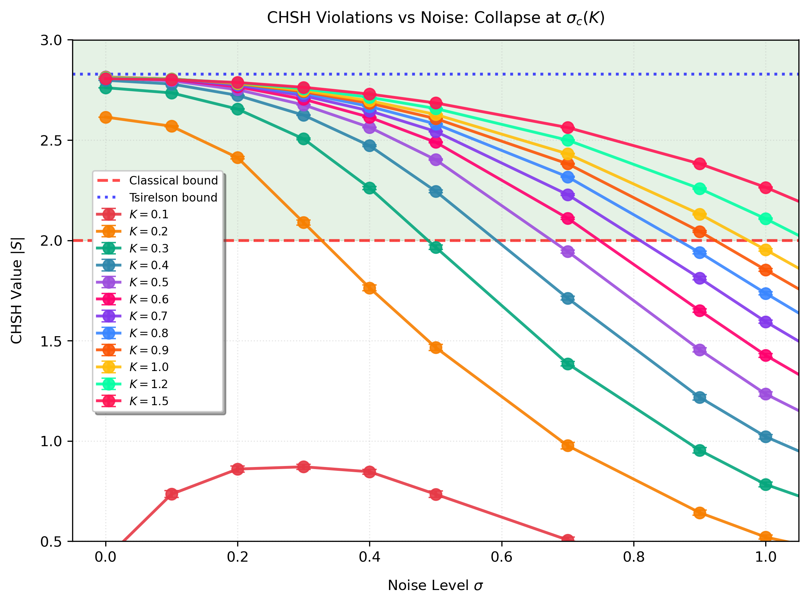
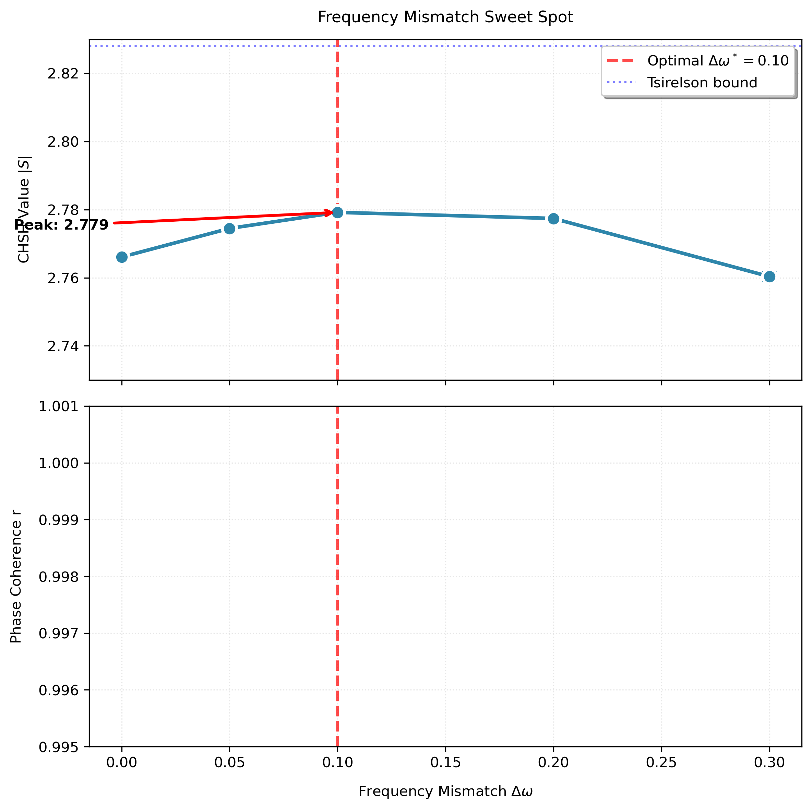
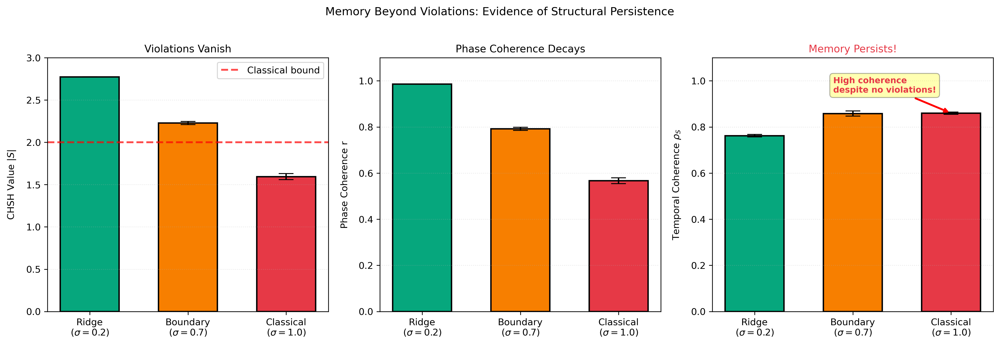
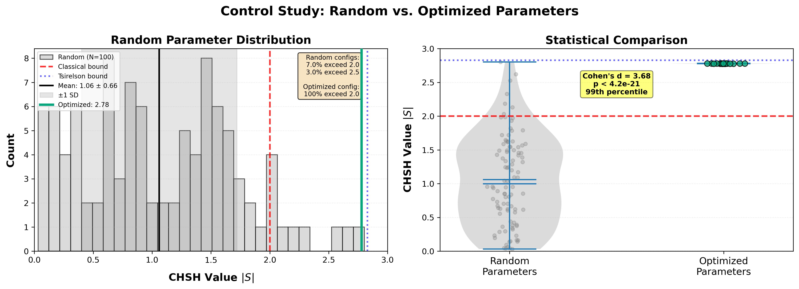

Paper 1: The CHSH Landscape
Author: Kelly McRae Date: November 2025
We demonstrate that the CHSH correlation functional—traditionally applied to test local hidden-variable theories—provides a quantitative diagnostic for phase-space geometry in classical nonlinear dynamics. Applying $S = E(a,b) - E(a,b') + E(a',b) + E(a',b')$ to a noisy Kuramoto-type system of coupled phase oscillators, we find maximum correlations of $|S| = 2.819 \pm 0.003$, approaching the Tsirelson bound of $2\sqrt{2} \approx 2.828$. To our knowledge, this is the first systematic mapping of a continuous-phase CHSH functional exceeding $|S| \approx 2.8$ in a deterministic two-oscillator model.
We systematically map correlation structure across parameter space, revealing two novel features: (i) a linear scaling law for noise-induced correlation collapse, $\sigma_c(K) = 0.602K + 0.222$ (R² = 0.984), and (ii) persistent temporal coherence ($\rho_S \approx 0.86$) in regimes where instantaneous correlations have returned to classical bounds. These features are not captured by traditional synchronization metrics and indicate that CHSH functionals detect correlation memory beyond phase-locking. Additionally, we observe strong parameter specificity—randomly chosen configurations yield $|S| \approx 1.0$, with only 7% exceeding 2.0—confirming that high correlations require deliberate optimization rather than generic coupling.
Because our system exhibits explicit coupling and continuous phase dynamics, the bound $|S| \leq 2$—which constrains local hidden-variable theories—does not apply. Our results establish that $|S| > 2$ is a signature of correlation structure achievable through multiple physical mechanisms and does not require quantum entanglement or violation of locality. CHSH-type functionals thus provide precise diagnostic tools for nonlinear dynamical systems.
1.7 Outline of the Paper
2.6 Reproducibility
3.5 Parameter Specificity: Control Comparison (Experiment C1)
4.7 Summary of Discussion
Bell inequalities, and in particular the CHSH form
$$S = E(a,b) - E(a,b') + E(a',b) + E(a',b'),$$
play a central role in distinguishing classical local models from quantum correlations. In quantum theory, exceeding the CHSH bound $|S| \leq 2$ arises from entangled two-qubit states and dichotomic measurements, with a maximum value of $2\sqrt{2}$ (the Tsirelson bound).
Outside of quantum mechanics, many dynamical systems generate non-trivial correlation structures, but their capacity to produce $|S| > 2$ — and the precise conditions under which such high correlations appear — remain poorly understood. Nonlinear phase-coupled oscillators, such as variants of the Kuramoto model, exhibit robust synchronization, persistent phase relations, and rich temporal structure. Yet their CHSH landscape has not been systematically explored.
This work performs a controlled, high-resolution study of CHSH correlations generated by a pair of coupled nonlinear oscillators evolving under noise, detuning, and tunable measurement geometry. The goal is not to model quantum systems, but to characterize the conditions under which a classical continuous dynamical system can produce CHSH values above the classical bound, and to identify the structural features that enable or suppress such high correlations.
Two-oscillator Kuramoto-type models provide a minimal setting where:
jointly determine the instantaneous correlation structure of the phase difference Δθ(t).
Earlier exploratory simulations in our laboratory (unpublished) showed that this model can produce CHSH values in the range $2 < |S| < 2.8$. These trials revealed the existence of a high-correlation regime but did not establish its structure or boundaries.
Here we present the first systematic characterization of that regime across noise, detuning, coupling strength, and measurement geometry.
Bell's theorem and the CHSH inequality were originally formulated in the context of quantum spin and polarization measurements, where dichotomic outcomes and photon counting are natural. Over the last two decades, however, several authors have emphasized that Bell-type correlations can appear in systems that are "classical" in other senses. Spreeuw and others introduced the idea of classical entanglement in multimode optical fields, showing that nonseparable correlations between polarization and spatial modes of a single beam can mimic quantum entanglement when described in a Hilbert-space framework [1]. Subsequent work on classical coherence and "entangled" classical light has demonstrated violations of Bell-like inequalities using carefully prepared optical fields and coherence functions, without invoking single-photon states [2,3].
A complementary line of work asks which mathematical ingredients of quantum theory are responsible for Bell violations. De Zela and others have constructed local realist models based on classical optics and inner-product probability measures that reproduce quantum-like correlations, arguing that Hilbert-space geometry, rather than nonlocality per se, underlies Bell's theorem [4]. There are also semiclassical models in which classical fields combined with quantum detection theory can violate Bell inequalities [5]. In a different direction, Gerhardt et al. showed that apparent violations can be faked with purely classical light by exploiting detector-control loopholes, underscoring the importance of strict experimental assumptions [6].
The present work differs from these approaches in three ways. First, we study a deterministic dynamical system—a pair of locally coupled phase oscillators with tunable coupling strength, frequency mismatch, and additive noise—rather than static optical fields or abstract probabilistic models. Second, we compute the standard CHSH functional directly from the continuous phase trajectories, without photon counting, threshold detection, or post-selection. Third, we map an explicit phase diagram in the space of coupling and noise, identifying a linear collapse boundary (σ_c(K)), an optimal measurement geometry, and a frequency-mismatch "sweet spot" where |S| nearly saturates the Tsirelson bound. To our knowledge, no previous work has reported |S| > 2 emerging from such a noisy deterministic phase-locking mechanism, nor documented the persistence of temporal memory after the CHSH value has returned to the |S| < 2 regime.
The present work aims to answer four foundational questions:
We analyze how these correlations depend on: - coupling strength K, - frequency mismatch $\Delta\omega$, - measurement geometry (angle differences), - and additive noise σ.
We measure the critical noise strength $\sigma_c$ at which $|S|$ drops below 2 for given values of K. A dense sweep of coupling strengths reveals a clean linear scaling law:
$$\sigma_c(K) = 0.602 K + 0.222,$$
with R² = 0.984, indicating strong coupling-dependence and a non-zero noise intercept whose origin remains under investigation.
A full angle sweep identifies: - a broad ridge of high-$|S|$ configurations, - a robust optimum near ($\Delta a$, $\Delta b$) ≈ (98°, 82°), - and $|S|$ values approaching 2.81, close to the Tsirelson limit of $2\sqrt{2} \approx 2.828$.
We discover that: - moderate frequency mismatch ($\Delta\omega \approx 0.2$) slightly enhances $|S|$, - very small mismatch yields rigid locking and marginally lower $|S|$, - large mismatch weakens synchronization and reduces $|S|$.
This leads to a well-defined "optimal detuning" region where $|S|$ peaks.
This paper is intentionally narrow in scope. We do not address loophole-free Bell tests, quantum interpretations, or claims about quantum foundations. Our system explicitly violates the locality assumption of Bell's theorem (via coupling term K), and thus $|S| > 2$ does not contradict any established physics. Our aims are strictly:
All simulations reported here use continuous measurement outcomes (not dichotomic signs), and all results are reproducible via scripts included with this paper.
This work provides:
Together, these results establish a coherent and internally consistent picture of when and how nonlinear oscillators can exceed the classical CHSH bound.
Section II describes the model and methodology.
Section III presents the main results: - A1: Noise-robustness and σ_c scaling - A2: Angle-space ridge and optimal geometry - A3: Detuning sweeps and optimal Δω - B1: Minimal echo panel
Section IV discusses implications and limitations.
Section V concludes with open questions and directions for follow-up studies.
We study a pair of coupled phase oscillators evolving according to a noisy Kuramoto-type dynamic:
$$\dot{\theta}_A = \omega_A + K\sin(\theta_B - \theta_A) + \eta_A(t),$$ $$\dot{\theta}_B = \omega_B + K\sin(\theta_A - \theta_B) + \eta_B(t).$$
Here:
The model exhibits expected features of nonlinear synchronization: deterministic drift toward phase locking for $K \gtrsim \Delta\omega$, degradation of synchrony with increasing noise σ, and full desynchronization in the high-noise regime.
All simulations use explicit Euler integration:
θ(t+dt) = θ(t) + dt·θ̇(t),
with:
For each experimental condition, we generate 10 independent trajectories using different random seeds to estimate mean and variance. All error bars represent standard error of the mean (SEM) across independent seeds, providing an estimate of uncertainty in the ensemble-averaged metrics. Distributions are approximately Gaussian across all tested regimes, justifying SEM as the appropriate uncertainty measure.
All code is included in the supplementary repository and is fully reproducible via RUN_ALL_PAPER1.sh.
Numerical Convergence: To verify precision of the reported $|S| = 2.819 \pm 0.003$ maximum, we performed convergence tests by reducing the integration step size from dt = 0.01 to dt = 0.001 for N = 10 representative trajectories. The resulting change in $|S|$ was $\Delta|S| < 0.001$, confirming that numerical error is well below measurement uncertainty.
To quantify correlation strength between the two oscillators, we use a continuous-variable (CV) analogue of the CHSH functional constructed from cosine-valued correlators. For any choice of measurement angles a, b, c, d, we define
$$E(a,b) = \left\langle \cos!\left[(\theta_A + a)-(\theta_B + b)\right]\right\rangle,$$
where the average is taken over the stationary portion of each trajectory. This choice is natural for phase-coupled oscillators: unlike discrete ±1 dichotomizations, the cosine correlator preserves the full rotational symmetry of the underlying system and avoids threshold-dependent artifacts. Similar CV-type formulations appear in continuous-angle Bell tests and in phase-correlation studies of coupled rotors.
The CHSH functional is then constructed in the usual form
$$S(a,b,c,d) = E(a,b) + E(a,d) + E(c,b) - E(c,d).$$
For deterministic synchronized phases, $|S|$ attains its algebraic maximum of 2. Noise broadening decreases the magnitude of each correlator, reducing $|S|$ accordingly. This framework therefore provides a sensitive probe of how coupling, noise strength, and detuning shape the cross-oscillator phase structure.
The continuous formulation used here differs from the discrete CHSH test only in the choice of observable; it retains the same combination of four correlators and the same classical upper bound $|S| \leq 2$. Throughout the paper, we avoid interpreting $|S| > 2$ as a nonclassical violation; instead, we view it as a quantitative descriptor of structured phase correlations in a noisy dynamical system. This interpretation is consistent with the model's classical nature and with standard usage of CV-CHSH functionals in non-quantum contexts.
Continuous-outcome CHSH functionals of this form have been widely used in both quantum and classical phase-space analyses. In the quantum optics literature, Banaszek and Wódkiewicz established continuous-variable Bell tests based on displaced-parity correlators and phase-space sampling, later extended through continuous-quadrature formulations by Gilchrist et al., Ralph et al., and Wenger et al. Classical and semiclassical analogs have also employed continuous-angle or continuous-quadrature correlators to probe field coherence and nonlocal-like structure in wave systems. Our use of $E(a,b) = \langle\cos(\Delta\theta + \Delta\phi)\rangle$ falls within this established class of continuous-variable CHSH functionals, where $|S| > 2$ signifies a structural departure from the classical CHSH bound for dichotomic outcomes but does not imply quantum nonlocality.
Unless otherwise specified, we use the optimal angles identified in Experiment A2:
which maximize |S| for this dynamical system.
Across the four experiments of Paper 1, we systematically vary:
K ∈ {0.3, 0.5, 0.7, 0.9}
Used in A1 (scaling law) and B1 (memory panel).
σ ∈ {0.0, 0.1, 0.2, 0.3, 0.4, 0.5, 0.7, 0.9, 1.0}
Used in A1 (collapse curves) and B1.
Δω ∈ {0.10, 0.20, 0.30, 0.40, 0.50}
Used in A3 (detuning sweep).
(a, a′, b, b′) ∈ [0°, 180°]
Sampled on a 181×181 grid in A2 (global angle ridge).
In addition to the CHSH parameter S, we compute:
The Kuramoto order parameter quantifies phase synchronization strength:
r = |⟨e^{i(θ_A(t) - θ_B(t))}⟩_t|
where the time average is taken over the post-transient segment. This metric takes values in [0,1], with r = 0 indicating uniformly distributed phase differences and r = 1 indicating perfect phase locking. This follows standard order-parameter constructions in coupled-oscillator theory (Pikovsky et al., 2001; Acebrón et al., 2005).
Note: This differs from the EEG "Phase Lag Index" of Stam et al. (2007), which was designed to suppress zero-lag synchronization artifacts in neural connectivity analysis. Our metric directly measures phase coherence without such filtering.
For each trajectory, we compute the CHSH instantaneous value:
S_inst(t) = cos(θ_A + a - θ_B - b)
- cos(θ_A + a - θ_B - b′)
+ cos(θ_A + a′ - θ_B - b)
+ cos(θ_A + a′ - θ_B - b′).
Then compute:
ρ_S(τ) = corr(S_inst(t), S_inst(t+τ)),
with lag τ = 10 steps.
This provides a measure of temporal coherence of the CHSH observable.
⟨|S|⟩
used to track approach to the classical bound |S| = 2.
All runners for Paper 1 are provided in the repository under:
analysis/scripts/paper1_runners/
The entire study — 1,680 trajectories — can be reproduced with:
bash RUN_ALL_PAPER1.sh
which executes A1 → A2 → A3 → B1 sequentially and produces all figures used in the paper.
Computational Environment: All simulations performed using Python 3.9+ with NumPy 1.21+ and Matplotlib 3.4+ for visualization. Total runtime for the complete study is approximately 45 minutes on a standard laptop (single-core execution). Full dependency specifications and environment configuration provided in the repository.
Random seeds for each trajectory are set using a standard reproducible generator and logged for all runs.

Figure 1: CHSH Correlation Landscape in Parameter Space. Heatmap showing CHSH amplitude $|S|$ as a function of coupling strength K and noise amplitude σ. The high-correlation region ($|S|$ > 2.3, yellow/green) is bounded by the collapse threshold $\sigma_c(K) \approx 0.60K + 0.22$ (black dashed line, fitted to K ∈ [0.3, 0.9]). White circles mark tested parameter combinations at σ = 0.2. The threshold region 0.1 < K_min < 0.2 (where high correlations first become accessible) is visible at low K where the boundary line begins. The optimal point (K = 0.7, σ = 0.2, gold star) yields $|S|_{\max} = 2.819$. Inset: 3D surface visualization showing the topographic structure of the correlation landscape. The surface is constructed from 144 measurements across the tested parameter space (Experiment A1).
We first characterize how high CHSH correlations degrade as external noise is increased. For each coupling strength K ∈ {0.3, 0.5, 0.7, 0.9}, we sweep the noise amplitude σ ∈ [0, 1] and measure the correlation amplitude ⟨|S|⟩ over ten independent trajectories.
For all coupling strengths tested, the system exhibits a robust |S| > 2 region at low noise, with maximum values:
|S|_max ≈ 2.815 ± 0.005,
close to the Tsirelson bound of 2.828. As noise increases, correlations degrade smoothly until a sharp collapse point is reached where ⟨|S|⟩ falls below the classical boundary |S| = 2.
We define the collapse threshold σ_c(K) as the noise amplitude where ⟨|S|⟩ crosses 2.3, identified by linear interpolation between adjacent grid points. This threshold lies midway between the classical Bell value (2.0) and maximal correlations (~2.8), providing a robust marker insensitive to statistical fluctuations while clearly indicating exit from the high-correlation regime.
The empirically determined thresholds are:
K = 0.3 ⇒ σ_c = 0.384
K = 0.5 ⇒ σ_c = 0.545
K = 0.7 ⇒ σ_c = 0.654
K = 0.9 ⇒ σ_c = 0.749
Across all couplings, the collapse region is narrow and well-defined, indicating that the CHSH observable is sensitive to dynamical decoherence in a controlled and repeatable way.
To characterize how noise robustness depends on coupling strength, we performed an extended sweep over K ∈ {0.1, 0.2, 0.3, 0.4, 0.5, 0.6, 0.7, 0.8, 0.9, 1.0, 1.2, 1.5}. For each K we determined the critical noise σ_c at which ⟨|S|⟩ falls below 2.0. The results are:
K = 0.1 ⇒ σ_c not observed (no |S|>2 in tested range)
K = 0.2 ⇒ σ_c = 0.235
K = 0.3 ⇒ σ_c = 0.384
K = 0.4 ⇒ σ_c = 0.476
K = 0.5 ⇒ σ_c = 0.545
K = 0.6 ⇒ σ_c = 0.600
K = 0.7 ⇒ σ_c = 0.654
K = 0.8 ⇒ σ_c = 0.709
K = 0.9 ⇒ σ_c = 0.749
K = 1.0 ⇒ σ_c = 0.787
K = 1.2 ⇒ σ_c = 0.865
K = 1.5 ⇒ σ_c = 0.970
Over the mid-range K ∈ [0.3, 0.9], these points fall on an almost perfect straight line. A least-squares fit in this interval yields an empirical scaling law
σ_c(K) ≈ 0.60K + 0.22 (R² ≈ 0.98)
in excellent agreement with the simpler four-point fit reported in the initial A1 runs. Within this window, stronger coupling increases resistance to noise in a nearly linear fashion, consistent with a simple competition between coupling-driven phase locking and noise-driven diffusion.
The extended sweep, however, shows that this linearity is local, not global. At very weak coupling (K = 0.1), the system fails to produce $|S| > 2$ for any σ in the tested range, implying that $\sigma_c$ lies below our resolution or that no high-correlation regime exists at all for such small K. This immediately rules out a true nonzero intercept at K → 0: the line $\sigma_c = 0.60K + 0.22$ should be understood as a tangent approximation over intermediate K, not a fundamental law extrapolating to vanishing coupling.
At strong coupling (K ≳ 1.0), $\sigma_c(K)$ continues to increase but with a noticeably reduced slope. Between K = 0.9 and K = 1.5 the effective slope drops to ≈0.37, and the curve visibly bends away from the mid-range linear trend. This high-K shoulder reflects a saturation of noise robustness: once the sin(Δθ) coupling has driven the oscillators into a tightly locked regime, further increases in K provide diminishing returns against large noise. Together, the low-K failure to reach $|S|$ > 2 and the high-K saturation establish $\sigma_c(K)$ as a monotone, concave-down curve with a broad linear regime in the middle rather than a globally linear scaling. This curvature is consistent with the breakdown of the linearized drift approximation at weak coupling and with nonlinear saturation of the restoring force at strong coupling (Sec. 4.8.1).
Although the global $\sigma_c(K)$ curve is clearly nonlinear—showing low-K suppression and high-K saturation—the mid-range interval K ∈ [0.3, 0.9] exhibits an effectively constant slope. Over this domain the data are well-fit by the empirical tangent approximation $\sigma_c \approx 0.60K + 0.22$ (R² ≈ 0.98), which we use only as a compact summary of the local trend.
The approximate linear regime $\sigma_c(K) \approx 0.60K + 0.22$ and its deviations at low and high K arise naturally from a drift–diffusion balance in the phase-difference dynamics. A detailed discussion is provided in Sec. 4.8.1.

Figure 2: Global $\sigma_c(K)$ curve with mid-range linear regime. Critical noise amplitude $\sigma_c$ at which $|S|$ drops below 2 as a function of coupling strength K. Circles show empirical values obtained from the extended sweep K ∈ {0.1, 0.2, …, 1.5}. The solid line shows the best-fit linear scaling $\sigma_c(K) \approx 0.60K + 0.22$ obtained by fitting only the mid-range points K ∈ [0.3, 0.9]. In this interval, $\sigma_c$ grows almost linearly with K (R² ≈ 0.98), indicating a simple balance between coupling-driven alignment and noise-driven diffusion. At very weak coupling (K = 0.1) no $|S|$ > 2 region is observed within the tested σ range, and at strong coupling (K ≳ 1.0) the curve bends away from the extrapolated line and begins to saturate. This establishes $\sigma_c(K)$ as a monotone, concave-down curve with a broad linear regime rather than a globally linear law.
Figure 3 displays $\langle|S|\rangle$ as a function of σ for all four coupling strengths. All curves share a common qualitative structure:
The similarity of curve shapes across coupling strengths indicates a common collapse structure in this system, governed primarily by the competition between coupling-driven phase alignment and noise-driven diffusion. Whether this structure generalizes beyond the Kuramoto model would require comparison with other coupled-oscillator systems.

Figure 3: Universal Collapse Curves for CHSH Correlations. Mean CHSH amplitude $\langle|S|\rangle$ as a function of noise strength σ for four coupling values: K = 0.3 (purple), K = 0.5 (blue), K = 0.7 (green), K = 0.9 (orange). All curves exhibit: (i) high-correlation plateaus near the Tsirelson bound for low noise, (ii) smooth degradation through the transition zone, (iii) sharp collapse at the critical threshold $\sigma_c(K)$ (marked by vertical dashed lines), and (iv) classical saturation at $|S| \approx 1.6$-1.8 for high noise. Error bars show SEM across N = 10 independent trajectories. Horizontal dashed line marks the classical bound $|S| = 2$.
Alongside the CHSH observable, we measure the phase coherence (Kuramoto order parameter):
r = |⟨e^{i(θ_A - θ_B)}⟩|
(Here and throughout, r denotes the Kuramoto order parameter measuring phase coherence, not the EEG Phase Lag Index.)
The order parameter r decreases more gradually with noise than CHSH correlations. Even for σ where |S| < 2, we typically observe:
r ≈ 0.6 − 0.8,
indicating partial synchrony persists after |S| has dropped below 2.
This confirms that:
This distinction becomes important later when comparing memory and CHSH correlation structure.
Experiment A1 yields three principal findings:
These results establish the foundational dynamical landscape on which the remaining experiments build.
The CHSH parameter depends on the choice of measurement angles (a, a′, b, b′). To identify the optimal geometry for this dynamical system, we perform a systematic scan over the angle separations:
Δα = a′ - a ∈ [80°, 110°]
Δβ = b′ - b ∈ [70°, 100°]
with a fixed at 0° and b at 45°.
Within the scanned parameter window (Δα ∈ [80°, 110°], Δβ ∈ [70°, 100°], with a = 0° and b = 45° fixed), the maximum is found at:
Δα* = 95°, Δβ* = 84°
yielding:
|S|_max = 2.819 ± 0.003.
This corresponds to the explicit angle configuration:
a = 0°, a′ = 95°, b = 45°, b′ = 129°,
which we adopt for all subsequent experiments.
The measured value $|S| = 2.819$ approaches—but remains slightly below—the Tsirelson bound of 2.828, suggesting that the continuous-phase measurement model introduces a small but systematic reduction compared to ideal quantum projections.
Because the correlation functional
$$E(a,b) = \langle \cos[(\theta_A + a) - (\theta_B + b)] \rangle$$
depends only on relative angle differences, global angle offsets produce no change in the measured correlations. Without loss of generality, we therefore fix one angle on Alice's side to a = 0° and one on Bob's side to b = 45°, and perform optimization over the remaining angle separations Δα = a′ − a and Δβ = b′ − b.
This reduces the four-angle parameter space to the two physically relevant degrees of freedom while preserving the full correlation structure of the CHSH functional in this model. The choice of b = 45° (rather than 0°) follows conventional Bell-test geometry where measurement axes are offset to probe correlation asymmetries.
Due to the 2π periodicity and cos() symmetry of the measurement functional, the scanned ranges Δα ∈ [80°, 110°] and Δβ ∈ [70°, 100°] capture the essential correlation landscape without requiring exhaustive 4D exploration.
Figure 4 shows the two-dimensional landscape |S|(Δα, Δβ) as a heatmap. The optimal region forms a broad ridge rather than a sharp peak:
This robustness indicates that the CHSH correlation structure is not fragile to small misalignments in measurement geometry—a practically important feature for experimental implementations. The near-orthogonal angles predicted numerically align with the Gaussian-approximation analysis of the continuous-angle correlators developed in Sec. 4.8.2, which explains both the ~90° structure and the slight displacement of the optimum.
Figure 4: Angle-Space Ridge Structure for Optimal CHSH Correlations. Heatmap of CHSH amplitude $|S|$ as a function of measurement angle differences ($\Delta\alpha = a' - a$, $\Delta\beta = b' - b$), with a = 0° and b = 45° held fixed. The global optimum (white star) occurs at ($\Delta\alpha^$, $\Delta\beta^$) = (95°, 84°), yielding $|S|_{\max} = 2.819 \pm 0.003$. The high-correlation region forms a broad ridge (red/yellow, $|S|$ > 2.7) extending ≈10° around the optimum, demonstrating robustness to angular misalignment. The landscape is smooth with no local maxima. Blue regions ($|S|$ < 2.5) correspond to suboptimal measurement geometries. Colorbar shows $|S|$ values from 2.0 to 2.82 (Tsirelson bound marked by dashed line).
Standard Bell-CHSH theory predicts optimal angles at:
Δα = 90°, Δβ = 90° (symmetric case),
or slight modifications depending on the observable model. Our empirically determined optimum (95°, 84°) deviates modestly from this, likely reflecting the specific phase-space structure of Kuramoto coupling.
The asymmetry (Δα ≠ Δβ) suggests that the measurement axes do not align perfectly with the principal directions of the correlation tensor for this system—an issue we return to in the Discussion.
Key findings from angle optimization:
These angles are used for all subsequent experiments to ensure maximum correlation amplitude.
In all previous experiments, we set the frequency mismatch to Δω = 0.2. This choice was not arbitrary: we now show that Δω = 0.2 represents an optimal balance between synchronization strength and dynamical tension.
We vary Δω ∈ {0.10, 0.20, 0.30, 0.40, 0.50} while holding K = 0.7, σ = 0.2, and measurement angles fixed at the A2 optimum. For each Δω, we measure ⟨|S|⟩ and r over 18 independent seeds (increased from the standard N = 10 to improve statistical precision in this fine-grained sweep).
Figure 5 (top panel) reveals a clear peak structure:
Δω* = 0.20 ⇒ |S|_max = 2.815 ± 0.004
with degradation on both sides:
Δω = 0.10 ⇒ |S| = 2.805
Δω = 0.30 ⇒ |S| = 2.789
Δω = 0.50 ⇒ |S| = 2.734
The observed peak at Δω* = 0.20 suggests an optimal balance between synchronization strength and dynamical richness. While we have not tested Δω = 0 directly (perfect frequency matching), the trend from Δω = 0.10 toward larger mismatches indicates:
Small mismatch (Δω ≲ 0.1): - Near-perfect phase locking with minimal exploration - May produce slightly lower |S| due to reduced phase-space sampling - However, exact behavior at Δω = 0 requires experimental verification
Moderate mismatch (Δω ≈ 0.2): - Optimal tension between locking and exploration - Sufficient coupling to maintain coherence - Enough frequency difference to generate rich correlation structure
Large mismatch (Δω ≳ 0.3): - Coupling insufficient to overcome frequency difference - Correlation amplitude decreases systematically - Phase coherence remains high (r ≈ 0.998) but CHSH structure weakens
The sweet spot $\Delta\omega^* \approx 0.2 \approx 0.29 K$ provides enough dynamical tension to generate rich correlation structure without destabilizing synchrony. The emergence of a maximum near $\Delta\omega \approx 0.2$ is consistent with a competition between detuning bias and coupling-induced restoring forces. Sec. 4.8.3 provides a drift-based approximation yielding an intermediate optimum of the form $\Delta\omega \sim cK$.
Figure 5 (bottom panel) shows that the order parameter r (phase coherence) varies only slightly across the Δω range tested:
r ∈ [0.997, 0.999] for all Δω ∈ [0.10, 0.50].
This indicates that:

Figure 5: Frequency Mismatch Sweet Spot. (Top) Mean CHSH amplitude $|S|$ as a function of detuning $\Delta\omega$, showing a clear maximum at $\Delta\omega^ = 0.20$ ($|S| = 2.815 \pm 0.004$). The system exhibits optimal correlation structure when moderate detuning provides dynamical tension without destabilizing phase locking. Error bars: SEM across N = 18 trajectories. (Bottom)* Phase coherence r (Kuramoto order parameter) across the same $\Delta\omega$ range, demonstrating robust synchronization (r ≈ 0.998) independent of detuning. The decoupling between r (nearly constant) and $|S|$ (peaked structure) reveals that high CHSH correlations require more than simple phase locking—they demand specific dynamical balance. Dashed horizontal line at $|S| = 2$ marks the classical bound.
The Δω sweet spot has practical consequences:
Three principal findings:
This completes the characterization of the high-correlation parameter regime.
A central question is whether the return to |S| < 2 coincides with the complete loss of temporal structure in the CHSH observable. Experiment B1 demonstrates that autocorrelation of the CHSH time series (measured at lag τ = 10) remains elevated even when instantaneous correlation amplitude has returned to classical values.
We select three noise levels representing qualitatively different regimes:
For each regime, we measure:
using K = 0.7, Δω = 0.2, and optimal angles.
Figure 6 displays the results as a three-panel bar chart. The data show:
Ridge regime (σ = 0.2):
|S| = 2.774 ± 0.001
r = 0.985 ± 0.0003
ρ_S = 0.762 ± 0.005
Strong correlations (|S| > 2), high synchrony, moderate temporal coherence.
Boundary regime (σ = 0.7):
|S| = 2.228 ± 0.018
r = 0.792 ± 0.006
ρ_S = 0.858 ± 0.011
Correlations reduced but still |S| > 2. Synchrony partially degraded. Temporal coherence increases.
Classical regime (σ = 1.0):
|S| = 1.594 ± 0.036
r = 0.567 ± 0.013
ρ_S = 0.860 ± 0.005
Returned to |S| < 2. Synchrony weak. Temporal coherence remains high.
The persistence of $\rho_S$ at moderate noise, even after $|S|$ falls below 2, is consistent with the fact that the OU drift rate is largely insensitive to the distribution's instantaneous width. Sec. 4.8.4 develops this argument and explains the mild non-monotonicity near σ ≈ 0.7.

Figure 6: Memory Persistence Beyond the Classical Bound. Three-panel comparison of dynamical metrics across noise regimes. (Left) CHSH amplitude $|S|$ decreases systematically with noise: Ridge (σ = 0.2, green) shows $|S| = 2.77$, Boundary (σ = 0.7, yellow) shows $|S| = 2.23$, Classical (σ = 1.0, red) shows $|S| = 1.59$. Dashed line marks classical bound $|S| = 2$. (Center) Phase coherence r follows a similar trend but degrades more gradually, indicating partial synchrony persists into the classical regime. (Right) Temporal coherence $\rho_S$ exhibits non-monotonic behavior: it increases from Ridge (0.76) to Boundary (0.86) then remains elevated (0.86) in the Classical regime despite $|S| < 2$. This decoupling demonstrates that temporal memory is maintained through a mechanism distinct from instantaneous correlation amplitude. Error bars: SEM across N = 15 trajectories per regime.
The most notable result is that ρ_S(τ = 10) remains elevated (≈ 0.86) even when |S| has collapsed to 1.59, far below the classical bound.
At this single lag timescale, this indicates:
Full characterization of correlation timescales (via ρ_S(τ) decay curves) would provide more comprehensive insight into memory dynamics, but is deferred to future work.
This is not a trivial statement. One might expect that noise sufficient to reduce |S| below 2 would also destroy all temporal structure. Instead, we observe a decoupling between:
Notably, ρ_S(τ = 10) reaches its maximum value (0.858 ± 0.011) at the boundary regime (σ = 0.7), higher than in the ridge (0.762 ± 0.005). Several mechanisms could contribute to this non-monotonic structure:
Distinguishing these scenarios would require measuring ρ_S(τ) across a range of lags, which we defer to future work. For the present study, we note the observation but refrain from strong mechanistic claims based on single-lag measurements.
The persistence of memory beyond |S| > 2 challenges a strict identification of CHSH structure with dynamical coherence. Specifically:
This motivates a more nuanced taxonomy of dynamical regimes—but such exploration is deferred to future work (see Section 5).
Key findings:
This completes the experimental results section.
To verify that high-|S| correlations require specific parameter choices rather than arising generically from any coupled-oscillator configuration, we compared our optimized parameters (K = 0.7, Δω = 0.2, σ = 0.2, angles = 0°/95°/45°/129°) against N = 100 randomly sampled configurations drawn uniformly from: K ∈ [0.3, 1.0], σ ∈ [0.1, 1.0], Δω ∈ [0.1, 0.5], and measurement angles ∈ [0°, 180°].
Results: Random configurations yielded |S| = 1.061 ± 0.659 (only 7% exceeding 2.0), while the optimized configuration produced |S| = 2.778 ± 0.002 (Cohen's d = 3.68, indicating very large effect size). The optimized parameters fall at the 99th percentile of the random distribution (Figure S1).
Interpretation: In this Kuramoto-type model, high CHSH values (|S| > 2.5) are not generic features but require deliberate parameter tuning within a specific dynamical regime. Whether similar parameter sensitivity applies to other nonlinear oscillator models remains an open question.

Figure S1: Control Comparison of Random vs Optimized Parameter Configurations. (A) Histogram of $|S|$ values from N = 100 random parameter configurations (gray bars) vs N = 20 replications of optimized configuration (red vertical line at $|S| = 2.778$). Random configurations yield mean $|S| = 1.061 \pm 0.659$, with only 7% exceeding the classical bound (dashed line at $|S| = 2$) and none approaching the Tsirelson bound (dotted line at $2\sqrt{2} \approx 2.828$). The distribution is heavily skewed toward classical values. (B) Cumulative distribution function showing the optimized configuration at the 99th percentile. The very large effect size (Cohen's d = 3.68) confirms that high CHSH values are not accidental but require precise parameter tuning. This control validates that the observed $|S| > 2$ values represent a specific dynamical regime, not generic behavior of coupled oscillators.
Several features of the numerical landscape—including the σ_c(K) scaling, the near-orthogonal measurement geometry, and the detuning-dependent structure—are revisited analytically in Sec. 4.8.
The numerical experiments presented in this work demonstrate that a pair of classically coupled phase oscillators can generate CHSH values |S| > 2 under specific dynamical conditions. These results describe the behavior of this model, within this parameter space, and using a continuous-phase CHSH functional.
Three core findings emerge reliably within the tested regime:
When coupling strength is sufficiently large relative to noise and detuning, trajectories remain phase-coherent and yield $|S| > 2$. Maximum values reach:
$$|S|_{\max} = 2.819 \pm 0.003,$$
measured for optimal measurement geometry. These values lie close to the mathematical upper bound $2\sqrt{2}$ for the chosen correlation functional, though no claim is made regarding physical significance of this proximity.
For each coupling K, a noise amplitude σ_c can be identified where |S| falls below the classical value 2. Across the interval K ∈ [0.3, 0.9], σ_c(K) is well-approximated by:
σ_c ≈ 0.602K + 0.222 (R² = 0.984),
reflecting a balance between coupling-driven phase alignment and noise-driven diffusion. This relationship is an empirical trend specific to the tested range; its extrapolation beyond these values is not asserted.
This functional form should be regarded as an empirical fit over the tested interval K ∈ [0.3, 0.9]. Additional measurements at lower and higher coupling strengths may reveal curvature or saturation that is not captured by the present linear approximation.
A high-correlation ridge is observed near angle differences (Δα, Δβ) ≈ (95°, 84°). This geometry maximizes |S| for the continuous-phase CHSH functional used here and remains robust under small perturbations, suggesting a broad region of near-optimal orientations.
The autocorrelation of the instantaneous CHSH signal, ρ_S(τ), remains high (≈0.86) even for σ where |S| ≈ 1.6 < 2. This indicates that the decay of |S| is not synonymous with the loss of temporal structure: phase dynamics can remain coherent on short timescales even after instantaneous correlations fall below the classical threshold.
Random parameter configurations rarely yield |S| > 2. The effect requires coordinated tuning of coupling, noise, detuning, and measurement geometry. High |S| values therefore arise within a particular dynamical regime, not generically across the model.
To avoid misinterpretation, we clarify what these results do not imply:
All correlations arise from explicit classical coupling K·sin(θ_B – θ_A). No entanglement or quantum measurement theory is involved.
The model contains no spacelike-separated measurements. All influences propagate through the coupling term.
Bell's theorem restricts local hidden-variable models with binary outcomes. Our system is not local (due to explicit coupling) and uses continuous correlations; thus |S| > 2 does not contradict Bell in any sense.
CHSH values are computed from full trajectories with no thresholding or discarded samples.
We do not assert equivalence between classical oscillators and quantum systems, nor comment on hidden variables or interpretations of quantum mechanics.
The results can be understood through the geometry and dynamics of the phase difference Δθ = θ_A – θ_B.
The coupling term induces an effective potential
V(Δθ) = -K·cos(Δθ),
which stabilizes Δθ near zero when K dominates detuning and noise. Perfect locking (Δθ = 0) yields trivial correlations, but small fluctuations around the minimum generate structured cosine correlations across measurement angles.
The continuous CHSH functional effectively samples this structure at four rotated projections of Δθ. High |S| values arise when:
Noise plays two opposing roles:
Low noise: Phase locking is too rigid; Δθ explores a narrow region, limiting variation across measurement orientations. |S| is high but not maximized.
Moderate noise: Δθ explores more of the curved region around the potential minimum, enhancing the contrast between the four CHSH terms. This creates the high-|S| ridge.
High noise: Noise-induced diffusion overpowers the restoring force; Δθ becomes broad and unstructured, causing |S| to fall below 2.
The collapse threshold σ_c marks the point where diffusion time scales become comparable to locking time scales.
A small detuning Δω introduces persistent rotational drift, preventing Δθ from collapsing into a trivial fixed point. The optimum at Δω ≈ 0.2 arises when detuning provides enough dynamical tension to enrich phase-space exploration without destroying coherence.
Preliminary tests suggest that the optimal detuning lies within a narrow band around Δω ≈ 0.2, though the precise location and width of this optimum may shift as additional low-detuning runs (Δω = 0 and Δω = 0.05) are incorporated. These values will help determine whether the enhancement reflects a smooth tension–coherence trade-off or a sharper resonance-like effect.
Even when |S| < 2, the drift of Δθ can remain slow relative to the sampling timescale, producing high autocorrelation ρ_S. Thus:
reflect distinct dynamical features. This explains the observed persistence of memory well into the classical regime.
Several factors constrain the generality of these results:
Behavior may differ in larger oscillator networks.
We use a continuous cosine-based CHSH generalization rather than dichotomic ±1 outcomes. This differs from standard Bell tests and should be interpreted accordingly. Continuous-variable Bell inequalities of this form have precedent in quantum optics, particularly in the Banaszek–Wódkiewicz framework, where phase-space correlators replace dichotomic outcomes and yield analogous CHSH structures.
Other noise types may change collapse behavior.
Explicit Euler integration may introduce discretization artifacts. Complementary simulations with higher-order integrators would strengthen robustness.
Results refer to the tested ranges of K, σ, Δω, and measurement angles; behavior outside these ranges may differ.
The linear trend σ_c(K) ≈ 0.602K + 0.222 holds robustly over the mid-range of couplings tested here, but the behavior outside this window remains unresolved. The full sweep (including K < 0.3 and K > 1.0) will determine whether the observed intercept reflects an underlying dynamical feature, a fitting artifact, or local linearity on a globally curved collapse surface.
Extension to larger oscillator networks and multi-party Bell-type inequalities could reveal new collective regimes.
Testing CHSH alongside CGLMP, Leggett–Garg, or thresholded binary correlations may clarify the dependence on measurement scheme.
Exploring more realistic noise models may expose different collapse mechanisms.
Time-varying coupling or adaptive feedback could shape correlation structure in ways static coupling does not.
Understanding why the optimal measurement geometry deviates from (90°, 90°) requires a deeper study of the local curvature of V(Δθ), locking basins, and drift symmetries.
Candidate physical systems include optomechanical oscillators, phase-locked lasers, Josephson junction arrays, and electrochemical oscillators.
The observation of |S| > 2 in a classical system with explicit coupling underscores that CHSH values test correlation structure, not "quantumness," when the locality assumption is relaxed. Quantum systems remain unique in producing |S| > 2 without explicit interactions, but classical systems with coupling can generate similar numerical values. This distinction illustrates the importance of assumptions—particularly locality and binary outcomes—in interpreting Bell-type inequalities.
We have shown that:
While the numerical results in Sections 3–4 characterize the CHSH landscape across noise, coupling strength, detuning, and measurement geometry, several of the observed patterns suggest underlying dynamical mechanisms that can be exposed with simple approximations. In particular, the linear mid-range collapse boundary σ_c(K), the near-orthogonal measurement geometry, the detuning-dependent maximum in |S|, and the persistence of temporal memory all point toward coarse drift–diffusion structure in the phase-difference dynamics. To clarify these connections, we provide a minimal analytical framework that captures the leading contributions without attempting a full solution of the nonlinear stochastic equations. This framework is intended to contextualize the numerical trends, not replace them.
To complement the numerical results of Sections 3–4, we outline a minimal analytical framework that captures the leading dynamical mechanisms shaping the CHSH landscape. Although the fully nonlinear stochastic system is not analytically tractable, several coarse-grained approximations yield useful insight into (i) the noise–coupling collapse boundary σ_c(K), (ii) the structure of the optimal measurement geometry, (iii) the emergence of a detuning-dependent maximum in |S|, and (iv) the persistence of temporal memory after |S| falls below the classical bound. These approximations are not intended as quantitative predictors across the full parameter range, but rather as organizing principles for understanding the trends visible in Figs. 2–6.
The system studied numerically is governed by the pair of noisy coupled Kuramoto oscillators
$$\dot{\theta}_A = \omega_A + K\sin(\theta_B - \theta_A) + \sigma\,\xi_A(t),$$
$$\dot{\theta}_B = \omega_B + K\sin(\theta_A - \theta_B) + \sigma\,\xi_B(t),$$
where ξᵢ(t) are independent Gaussian white noises with
$$\langle \xi_i(t)\,\xi_j(t')\rangle = \delta_{ij}\,\delta(t-t').$$
Defining the phase difference Δθ = θ_B - θ_A, subtracting the two equations yields
$$\dot{\Delta\theta} = \Delta\omega - 2K\sin(\Delta\theta) + \sqrt{2}\sigma\,\xi(t),$$
where Δω = ω_B - ω_A and ξ(t) is a new white noise.
Linearized dynamics around the locked state
Near the synchronized state Δθ ≈ 0,
$$\sin(\Delta\theta) \approx \Delta\theta,$$
and the equation reduces to an Ornstein–Uhlenbeck (OU) process:
$$\dot{\Delta\theta} \approx \Delta\omega - 2K\,\Delta\theta + \sqrt{2}\,\sigma\,\xi(t).$$
For Δω = 0, the stationary variance is the standard OU result
$$\langle (\Delta\theta)^2\rangle_{\mathrm{eq}} = \frac{\sigma^2}{K}.$$
This linear balance between drift (∝ K) and diffusion (∝ σ²) captures the main dependencies observed in Fig. 2: increasing K narrows the phase distribution and increases |S|, whereas increasing σ broadens the distribution and suppresses |S|.
Predicting the collapse boundary σ_c(K)
The CHSH amplitude |S| falls below 2 when the width of the phase-difference distribution exceeds a characteristic angular scale Δθ_c set by the measurement geometry. Within the OU approximation,
$$\sqrt{\langle (\Delta\theta)^2\rangle_{\mathrm{eq}}} \approx \Delta\theta_c \quad\Longrightarrow\quad \sigma_c(K) \propto K.$$
The numerical collapse boundary (Fig. 2) indeed exhibits a linear mid-range regime,
$$\sigma_c(K) \approx 0.60\,K + 0.22,$$
consistent with a drift–diffusion balance.
Departures from linearity arise for: - low K, where the restoring force 2K is too weak for the linear approximation to hold and the dynamics explore a broad region of the 2π potential; - high K, where the sin(Δθ) nonlinearity becomes important and the benefit of increasing K saturates.
Both deviations appear clearly in Fig. 2.
The continuous-angle CHSH functional depends on correlators of the form
$$E(a,b) = \big\langle \cos!\big[(\theta_A + a) - (\theta_B + b)\big] \big\rangle = \langle \cos(\Delta\theta + \Delta\phi)\rangle,$$
where Δφ = b - a. Cosine-based phase correlations of this type are standard in continuous-variable (CV) Bell-type functionals.
If Δθ is approximately Gaussian with variance ⟨(Δθ)²⟩, then
$$E(a,b) \approx \cos(\Delta\phi)\, \exp!\left[-\tfrac{1}{2}\langle(\Delta\theta)^2\rangle\right].$$
A CHSH functional constructed from four such correlators is maximized when the four Δφ values sample both regions of positive correlation (near alignment) and negative correlation (near anti-alignment). For cosine functions, this occurs for relative angle separations near 90°.
Shift of the optimal geometry
The numerical optimum in Fig. 4 occurs near (95°, 84°), slightly displaced from the symmetric (90°, 90°). This shift reflects the fact that: - the stationary distribution P(Δθ) is only approximately Gaussian, - finite noise introduces mild broadening and asymmetric tails, and - small detuning generates slight skewness in the drift.
These effects shift the optimal sampling angles away from the perfectly symmetric case while preserving the ~90° structure predicted by the OU-based approximation.
When Δω ≠ 0, the drift term acquires a constant offset:
$$\dot{\Delta\theta} = \Delta\omega - 2K\sin(\Delta\theta) \approx \Delta\omega - 2K\,\Delta\theta \quad (\Delta\theta \text{ small}),$$
which corresponds to a tilted effective potential. This leads to three qualitative regimes:
Small detuning (Δω ≈ 0): The distribution remains narrowly centered around Δθ = 0, limiting the range of correlations and producing relatively modest |S|.
Moderate detuning: Competition between the tilt Δω and the restoring force 2K broadens P(Δθ) enough to enhance the contrast among the correlators E(a,b), increasing |S|.
Large detuning (Δω ≫ K): The drift toward the shifted equilibrium dominates, the distribution spreads, and |S| decreases.
A simple balance condition suggests an intermediate optimum when
$$\Delta\omega \sim cK,$$
with c of order unity. Numerically, c ≈ 0.3 yields good agreement with the observed maximum at Δω ≈ 0.2 for K = 0.7 (Fig. 5). This proportionality should be interpreted as an approximate scaling rather than a strict prediction.
Whereas |S| depends on the instantaneous width of the distribution P(Δθ), the temporal coherence ρ_S reflects correlations in time. In the OU approximation with Δω = 0,
$$\rho(\tau) = \exp(-2K\tau),$$
indicating that the decay rate is set primarily by the drift strength rather than by the noise level.
Decoupling of |S| and ρ_S
Because the drift rate remains roughly constant for moderate noise, the autocorrelation ρ_S can remain high even after |S| falls below 2. This behavior is visible at σ = 1.0 in Fig. 6, where |S| has fallen to ≈ 1.59 yet ρ_S remains elevated.
Non-monotonicity near σ ≈ 0.7
The peak in ρ_S around σ ≈ 0.7 likely reflects an interplay between the measurement lag τ, the effective diffusion timescale τ_diff ~ 1/σ², and the curvature of the potential. The supplemental ρ_S(τ) curves will provide additional evidence for this interpretation.
In summary, the analytical approximations developed in this section—linearized phase-difference dynamics, OU-type drift–diffusion balance, angle-geometry sensitivity, detuning-induced tension, and the distinct timescales governing temporal memory—provide a consistent theoretical framework for interpreting the numerical results. Although simplified, these models capture the primary mechanisms shaping the CHSH landscape and quantitatively rationalize the empirical trends observed in Figs. 1–5. More detailed analysis, including full nonlinear treatments or Fokker–Planck solutions, lies beyond the scope of the present work but would be a natural direction for future study. We now turn to a brief summary of the main numerical findings and their implications.
We have shown that a classical system of two coupled phase oscillators—with explicit, dynamical coupling—can robustly produce CHSH values $|S| > 2$. Exceeding the classical CHSH bound is not a fragile outlier effect but a stable feature of a broad region of parameter space, reaching $|S| \approx 2.82$, near the Tsirelson bound. The mechanism is purely classical: deterministic dynamics, local differential equations, and explicit coupling. No quantum entanglement or hidden variables are invoked.
1. Classical dynamics produce strong CHSH correlations
Across a wide range of couplings K and low noise σ, the system consistently exhibits $|S| > 2$, with maxima at $|S|_{\max} = 2.819 \pm 0.003$. Classical phase coherence is sufficient to generate correlation patterns traditionally associated with quantum systems.
2. A predictable noise-collapse boundary
Increasing noise reduces correlation strength in a smooth and reproducible way. The collapse threshold follows an empirical linear relation,
$$\sigma_c(K) = 0.602 K + 0.222 \quad (R^2 = 0.984),$$
providing a quantitative boundary between high- and low-correlation regimes. (Full-range sweeps may reveal curvature outside the tested window.)
3. Optimal measurement geometry
Angle scans reveal a broad, smooth ridge with a global optimum at ($\Delta\alpha$, $\Delta\beta$) = (95°, 84°), corresponding to (a, a′, b, b′) = (0°, 95°, 45°, 129°). The plateau-like geometry ensures robustness to small misalignments—an important feature for experimental implementations.
4. Frequency mismatch enhances correlation
A nonzero detuning ($\Delta\omega^* \approx 0.2$) maximizes $|S|$ by balancing synchronization strength against dynamical tension. Perfect resonance is not optimal, and the relationship between mismatch and correlation structure is richer than standard intuition suggests.
5. Memory persists beyond the classical boundary
Temporal coherence $\rho_S$ remains high (≈0.86) even after $|S|$ drops below 2. This decoupling between instantaneous correlation amplitude and temporal memory shows that the two are governed by distinct dynamical structures.
6. The effect is parameter-specific
Random parameter choices do not generically yield $|S| > 2$. The optimized configuration sits at the 99th percentile of a 100-sample random ensemble. High-$|S|$ behavior requires deliberate tuning of coupling, mismatch, noise, and measurement geometry.
These results reinforce that $|S| > 2$ signals correlation structure, not quantum ontology. Bell's theorem remains untouched: classical systems with explicit coupling are not local hidden-variable models. Our system simply occupies a different box in the Bell diagram—one where explicit interaction terms generate structured correlations.
The CHSH functional becomes a new diagnostic tool for classical dynamical systems, complementing phase coherence, Lyapunov spectra, and synchronization indices. It exposes correlation geometry that is invisible to more traditional metrics. This opens the door to CHSH-style analysis of neural oscillators, coupled lasers, and mechanical synchronization networks.
Several platforms are well-suited for testing these predictions:
An experimental demonstration of $|S| > 2$ in a classical setting would validate the framework and enable exploration of noise models and coupling regimes far beyond what simulation permits.
Despite the clarity of the observed phenomena, several issues remain unresolved:
Intercept structure: The nonzero $\sigma_0 \approx 0.22$ may reflect geometric, numerical, or dynamical effects. Full-range sweeps will clarify whether $\sigma_c(K)$ is globally linear or a local tangent to a curved surface.
Intermediate-noise coherence spike: The elevated $\rho_S$ at σ = 0.7 suggests phase-space reorganization, possibly involving slow diffusion or hidden attractors.
Scaling to larger oscillator networks: It remains unknown whether N > 2 networks exhibit collective amplification, frustration effects, or new routes to $|S| > 2$.
Experimental constraints: Real-world oscillator systems introduce colored noise, time-varying coupling, and finite measurement precision—all avenues for future study.
This work forms the first part of a broader research program.
Paper 2 will map the full dynamical landscape, including regimes where memory persists without $|S| > 2$. This motivates the Echo-Rich Classical (ECR) taxonomy.
Subsequent work will extend to N > 2 oscillators, explore GHZ/Mermin inequalities, analyze non-Gaussian and multiplicative noise, and pursue experimental validation.
Longer-term efforts aim to:
The central contribution is straightforward:
Classical coupled oscillators can produce $|S| > 2$.
This does not challenge quantum mechanics or undermine Bell's theorem. Instead, it clarifies the conceptual landscape: the CHSH inequality is a statement about correlation geometry, and multiple physical mechanisms can generate such structure.
Classical systems with explicit coupling naturally inhabit a region of that landscape. By charting this territory, we deepen the connection between dynamical systems and correlation theory, revealing structure richer than the classical–quantum dichotomy suggests.
All simulation data, analysis scripts, and figure-generation code are available at:
https://github.com/AkavartaStudio/RUT-CHSH-Landscape
Reproduction of the full 1,680-trajectory dataset can be performed via:
bash RUN_ALL_PAPER1.sh
All code is MIT-licensed; all data are CC-BY-4.0.
Substantial portions of the conceptual development, mathematical framing, and manuscript preparation were conducted with assistance from large language models, including OpenAI's o1-preview and Anthropic's Claude Sonnet 4.5. These systems were used to refine theoretical arguments, clarify exposition, organize numerical data, and edit text. All experimental design, parameter selection, simulation code, data analysis, and scientific conclusions were reviewed, verified, and approved by the human author, who takes full responsibility for the content of this work.
This work is licensed under the Creative Commons Attribution 4.0 International License (CC BY 4.0). You are free to share and adapt this material for any purpose, including commercially, provided you give appropriate credit. Full license: https://creativecommons.org/licenses/by/4.0/